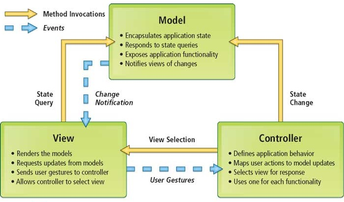
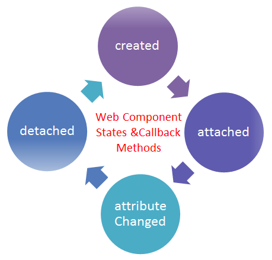

Web Components
Components
Elements of the User Interface that are:


- Encapsulated: contain all the HTML, CSS and JS
- Independent: explicitly connected to the application
- Reusable: use the same components in multiple apps
Atomic Design
Atomic Design
- Everything is a component
- Componens compose into larger components
- Granularity, reuse and maintainability
Model-View-Controller
Model-View-Controller
- Model: manages domain behavior and data
- View: represents the display of a model
- Controller: takes user input, manipulates the model which causes the view to update
- Core idea: Separation of concerns
Unidirectional data flow
Unidirectional data flow
- Actions: simple objects - type property and data
- Dispatcher: central entry-point, routes actions to stores
- Stores: execute logic for actions, contain pure state
- Views: hierarchies of components, render on store state changes
- Core idea: predictable data flow
Two-way binding vs Virtual DOM
- Two-way binding: changes are applied individually, cascades may happen
- Virtual DOM: batches changes, re-renders efficiently
Virtual DOM
Components Lifecycle
Components Lifecycle
- Created: an instance of a component has been created
- Attached: an instance has been attached to the DOM
- Changed: an instance has been changed
- Detached: an instance has been removed from the DOM
Web Component Standards
Custom elements
specification for designing and using new types of DOM elementsShadow DOM
specifies how to use encapsulated style and markup in web componentsHTML templates
defines how to declare fragments of markup that go unused at page load,
but can be instantiated later on at runtimeHTML Imports
defines the inclusion and reuse of HTML documents in other HTML documents
Web Component Standards
The web components standarts are still being developed
and are NOT yet ready for direct production use.
Many frameworks are simulating some of the Web Component features
The standards do NOT try to solve state managment or app composition
Links
Course Schedule:
| week 1 03.02.2017 | History of the web | Fullstack Principles | Development Processes | Agile Processes | DevOps Basics | Git |
| week 2 10.02.2017 | Frontend Overview | Backend Overview | Network Overview | Testing | JavaScript Overview | JavaScript Tooling |
| week 3 17.02.2017 | Web Architectures | RESTful principles | SOLID principles | Web Components | Continuous Integration | |
| week 4 24.02.2017 | Databases basics | Using APIs | Deployment Automation | Monitoring | In-class project consultations | |
| week 5 17.03.2017 |
Project presentations Final Test Course Retrospective and Q&A |
|||||